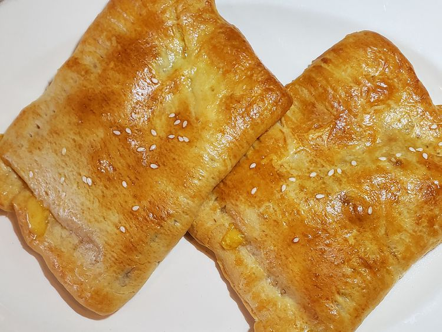

Ham and Cheese

Description
These homemade ham and cheese hot pockets are a DIY version of the frozen sandwich with crescent rolls and a simple filling, good for breakfast, lunch, or a snack.
Ingredients
- 1 (8 ounce) can refrigerated crescent rolls, such as Pilsbury® Original Crescents
- 1 tablespoon yellow mustard, plus more for serving
- 2 thin slices Black Forest ham, cut in half
- 4 slices sharp Cheddar cheese, cut in half
- 1 large egg
- 2 teaspoons water
- 1 teaspoon sesame seeds
Steps
- Preheat the oven to 375 degrees F (190 degrees C). Line a baking sheet with parchment paper.
- Unroll dough onto the parchment paper. Press perforated seams together or use a rolling pin to roll dough into a single large rectangle.
- Cut dough in half crosswise to form 2 squares, then cut each square in half again so you have 4 large rectangles. Spread a bit of mustard on 1 half of each rectangle.
- Lay 1 ham slice over mustard, then top with 2 cheese slices. Repeat for all rectangles.
- Lift the bare end of dough up and bring it over the end with toppings. Press down on all sides, then use a fork to press down and seal the "pocket" all the way around.
- Whisk egg and water together with a fork in a small bowl or cup, then brush egg wash on each hot pocket. Sprinkle each pocket with sesame seeds.
- Bake in the preheated oven until dough is puffed and golden brown, about 10 minutes. Serve with mustard.
Home